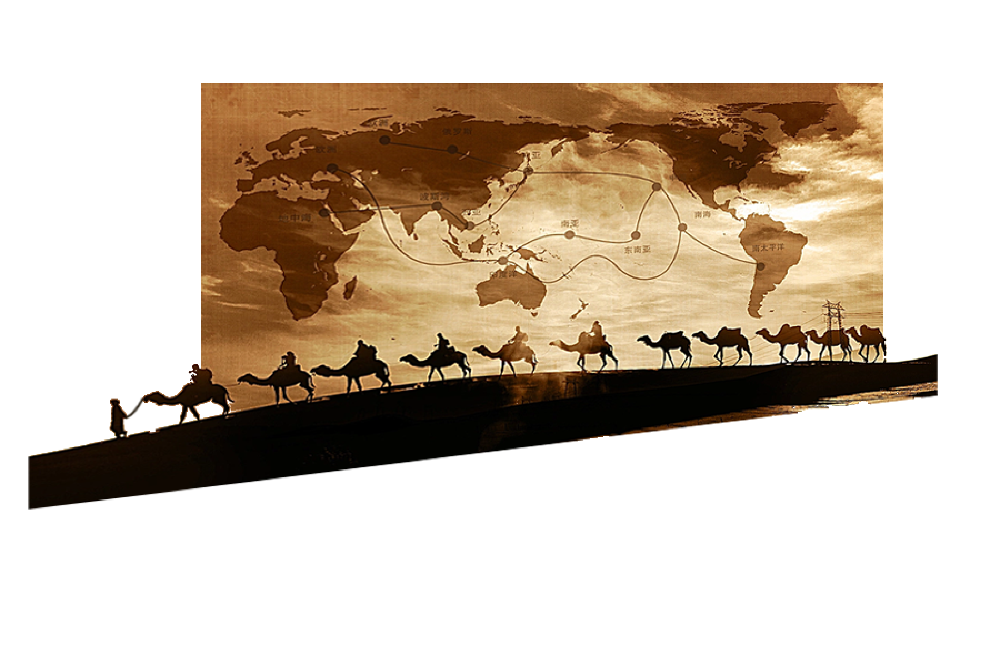
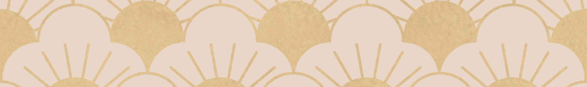
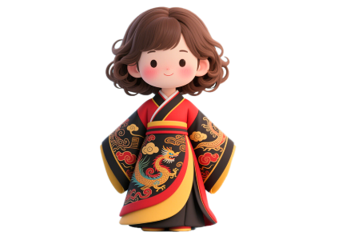
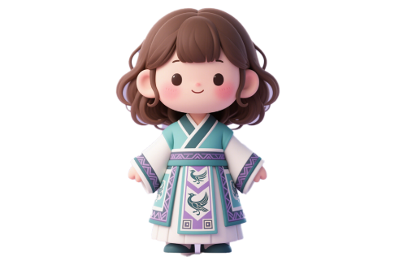
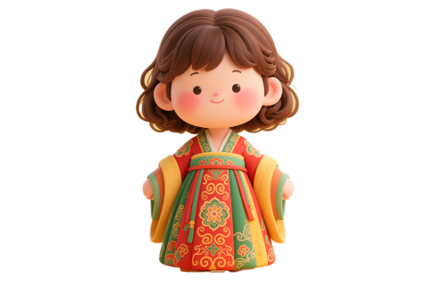
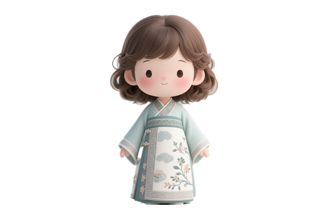
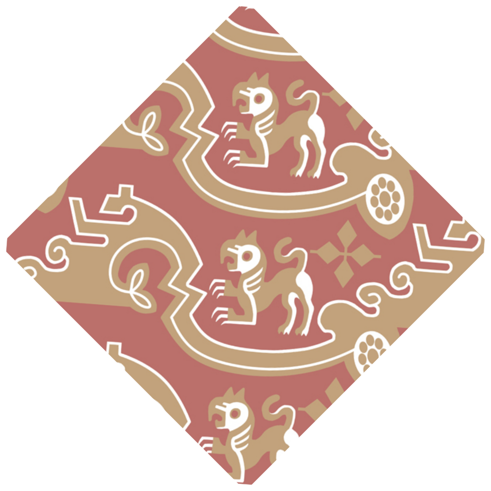
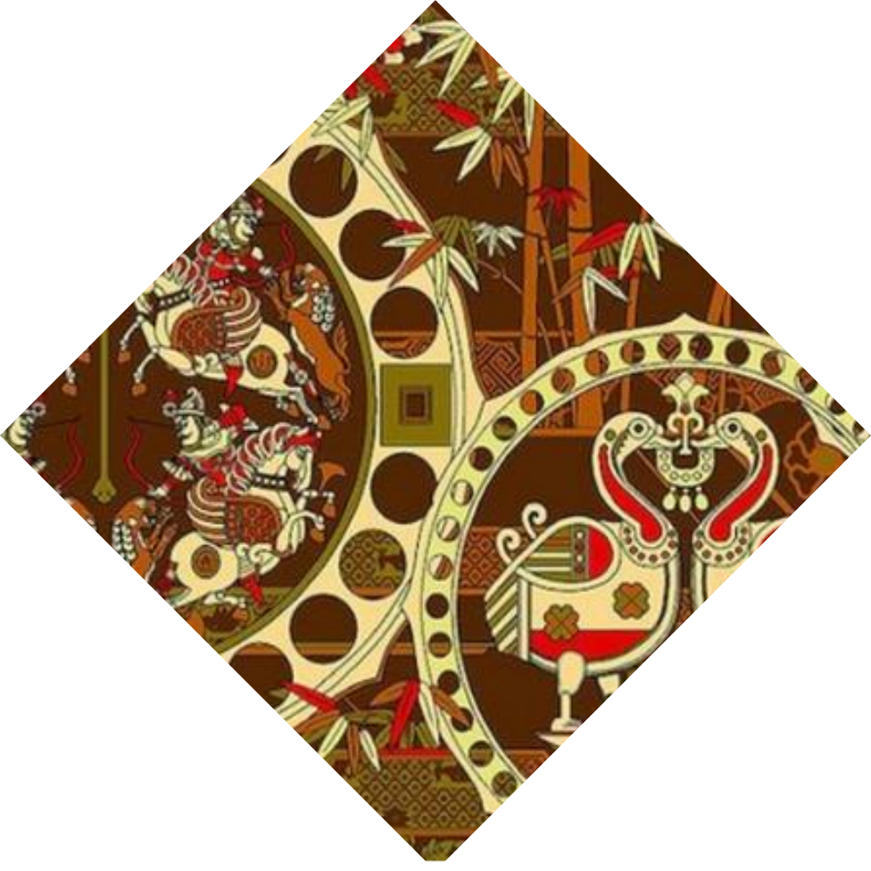
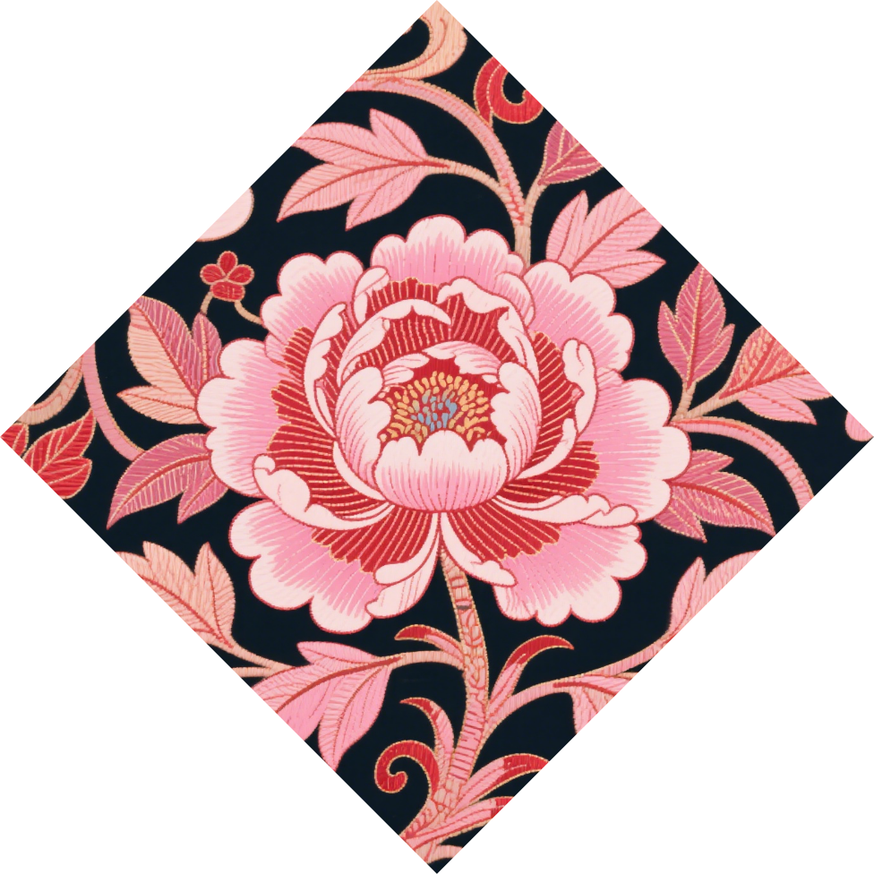

首页
年轮
针脚
此际

蜀锦起源于战国时期的蜀地（今四川地区），因其工艺精湛、纹样华美，自秦汉以来成为中原王朝重要的贸易商品。丝绸之路开通后，蜀锦通过多条通道向西、向南传播，成为连接中国与中亚、西亚、欧洲及东南亚的 “文化使者”。罗马学者普林尼在《自然史》中记载：“赛里斯人以织锦闻名，其织物轻柔如蛛网，色彩艳丽夺目。”蜀锦织造技艺至今保留传统工艺，其在丝绸之路上的传播史成为研究古代中外交流的重要案例。

我穿着的新衣裳，你瞧，那金黄的龙纹，鳞片亮闪闪，像要从黑缎子上飞出来；边上的云纹轻轻绕，红通通的，像灶里的火苗。听阿娘说，蜀锦的纹样老金贵啦，织的时候要把丝线绕好多回，这些龙呀云呀，是蜀地的巧娘一点点织出来的，穿上它，我都觉得自己能沾上蜀锦的灵气，像只快活的小鸟！

我身上这件襦裙可厉害啦！裙角上的蜀锦，有张牙舞爪的青龙，鳞片金闪闪，像在云里游；还有朱雀，红羽毛飘呀飘，听阿娘说，这些纹样是秦汉时蜀地阿姨们织的，穿上它，我都感觉能沾上当年的神气，像个小卫士，走路都要把胸膛挺得高高的！

我穿着阿娘用蜀锦裁的裙裳，衣襟上的宝相花可好看啦！花瓣一层一层，像把好看的花儿都叠起来，还有彩线绣的小禽鸟，在锦纹里要飞起来似的。听说，这些纹样是从西域和咱蜀地的花样凑一块儿的，穿上它，走路都像踩着云朵，连风里都飘着蜀锦的鲜亮颜色哩！

我身着淡青襦裙，衣襟上的蜀锦纹样可好看啦！你瞧，那云朵纹轻柔舒展，像天上飘着的棉花团，还有细细的花枝纹，绽着小花，听阿娘说，这些是宋代时兴的样式，蜀地的巧匠把花草、云朵都织进丝里，穿上它，连步子都变得轻巧，好似踩着宋时的风哩！


秦汉时期代表有祥禽瑞兽纹，文字纹，而云气纹常作为蜀锦纹样的骨架，以流畅的线条表现云气的飘动、卷曲和变幻，营造出一种仙境缥缈的氛围。云气纹的形态多样，有流云纹、如意云纹等，它不仅具有装饰性，还与当时盛行的阴阳五行学说和神仙信仰有关，寓意着吉祥、升仙和长生不老。 云气纹的形成和演变经历了多个时期，最早的云气纹是由中国古代的云气文化演变而来，形成了云气纹的基本形态。
唐宋时期是蜀锦发展的鼎盛阶段，其纹样题材丰富、构图饱满、色彩绚丽，蜀锦的图案有格子花、纹莲花、龟甲花、联珠、对禽、对兽等，图案十分丰富。花鸟纹画面通常是喜鹊、鹦鹉、鸳鸯等鸟类在花丛中嬉戏的场景，充满生机与活力。花卉以牡丹、莲花、菊花等为主，形态写实，色彩鲜艳。这种纹样一般以连珠团花、满地散花等形式呈现，具有富丽、喜庆的寓意。


牡丹在明清蜀锦中极为常见，因其花形丰满、色彩艳丽，被视为富贵、繁荣的象征。蜀锦中的牡丹纹常常以写实或夸张的手法呈现，花朵形态饱满，花瓣层次丰富，枝叶卷曲缠绕，有的还与其他花卉、动物组合，如 “凤穿牡丹”，寓意美好吉祥，展现出华丽富贵的气质